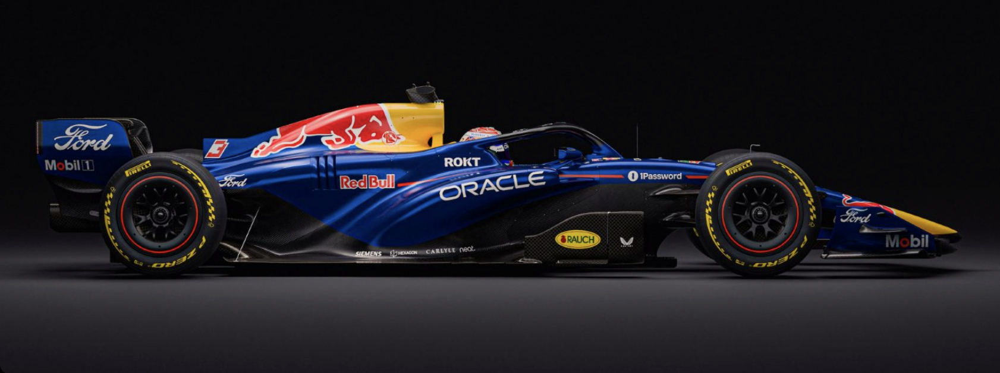

Oracle Red Bull Racing
RB22
Built around speed
and contrast.
RB22 是红牛首款搭载 Ford 动力单元的 F1 赛车——Red Bull Ford DM01，标志着 Ford 重返 F1。 2026 年 1 月 15 日在底特律发布涂装，1 月 26 日在巴塞罗那完成首测（Verstappen 两天 187 圈），展现出强大的初期可靠性。
动力单元与性能
引擎 EngineRed Bull Ford DM01 — 1.6L V6 Turbo Hybrid
综合功率 Total Power~750 kW / ~1,020 PS
最高转速 Max RPMICE 15,000 rpm
燃油 & 润滑油Esso / Mobil Synergy 燃料 / Mobil 1 润滑油
ERS 能量回收~350 kW MGU-K / MGU-H 已取消
变速箱 GearboxRed Bull Technology 自研 8 速
底盘与车身
底盘 Chassis碳纤维复合材料单体壳
最低车重 Min Weight770 kg（含车手、冷却液、机油）
悬挂 Suspension前多连杆推杆 / 后双叉臂推杆 / 最小化抗俯冲几何
制动 Brakes碳/碳复合材料碟 / Brembo 卡钳
轮毂 WheelsOZ 18 寸
轮胎 TyresPirelli P Zero（干）/ Cinturato（湿）
技术与运营
侧箱设计极致紧凑短侧箱 / 上侧撞结构外露作气流导引
扩散器 Diffuser激进无侧壁设计 / 扩散器翼片安装于扩散器侧面
主动空力 Active Aero中央执行器翻转式尾翼 / 三元素前翼波浪前缘
车手 DriversMax Verstappen / Isack Hadjar
技术总监 Tech DirectorPierre Waché（底盘）/ Ben Hodgkinson（动力单元）
领队 Team PrincipalChristian Horner